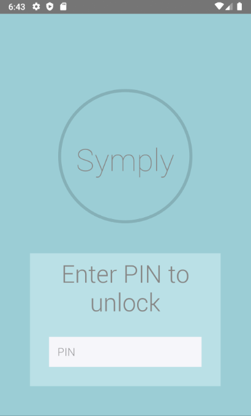
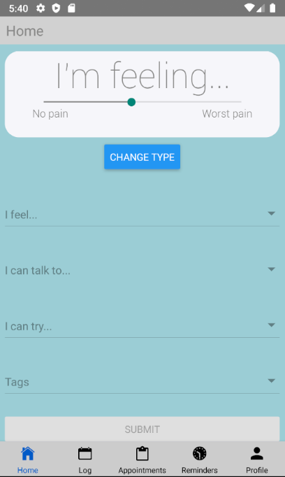
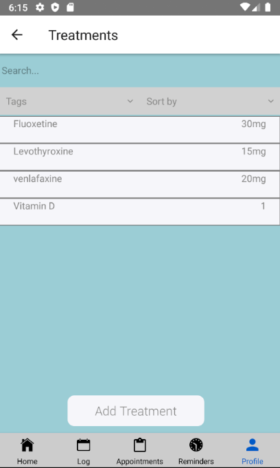
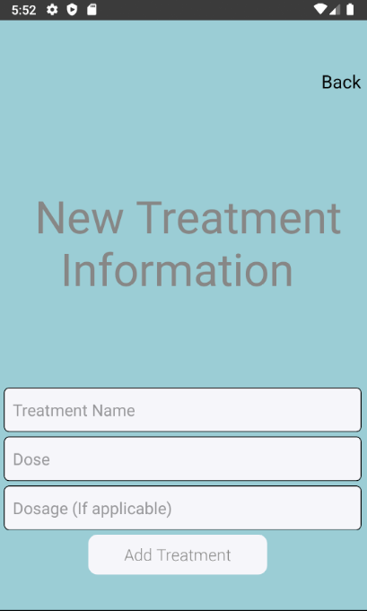
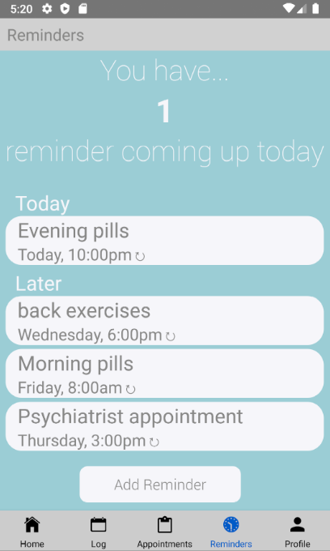

Login
Users can set a pin to provide an additional layer of security for their confidential medical information

Home Screen
For quick and easy logging, the landing screen allows users to record symptom incidents without having to go to a
separate scree

Medical Information
Various lists provide a visual log of any symptoms, treatments, appointments, or providers the user wants to track

Forms
Users can add new reminders, appointments, providers, and treatments straight from the corresponding list screen

Reminders
Users can set reminders to help them stay on track with their treatments, appointments, or self-care habits
The entire application was made using React Native. To store information like symptoms and treatments we used the
Realm database.
Realm is an offline-first database that stores information fast and locally on your device.